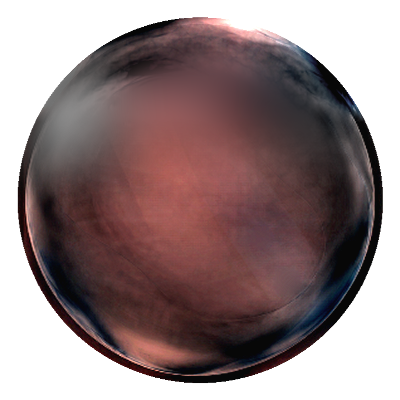

Final Art 025 · M3 首段连续字段研究
这是 M2 锁定之后的第一段连续字段实验。它在同一个固定球体和同一套 GPU 字段上，只改变内部 optical depth、cloudy density、局部 refraction 和 sparse detail；外壳、轮廓、正式 film、高光、中心和尺寸都保持冻结。它不是动态状态，也不是 production migration。
M3 SLICE 1 · INTERNAL FIELD STUDY · EXPERIMENTAL ONLY
固定球体与当前输出
连续字段输出
背景：中性灰 · 只采样静态字段，不运行时间循环。
首段目标
- 025 锁定值可以一键恢复，并保持原静态 GPU 输出。
- 四个内部参数是真实 uniform，滑动会改变最终像素。
- silhouette、formal film、reflection、center、radius、hitRadius 不随参数变化。
- 所有更厚参数都是 future transition study，不冒充 050、075 或 K2 authority。
M2 锁定：m2-static-gpu-lock.json · 当前证据：m3-continuous-field-evidence.json
预设与背景
内部字段参数
1.00
1.00
1.00
1.00
loading field state…
冻结项：formal silhouette、formal film、reflection、thickness field、center、radius、hitRadius。空间 thickness 本轮保持 M2 的 spatial 模式，不作为滑杆参数。
GPU 输出与 025 基线
当前参数输出
当前画面由上方四个 uniform 共同决定。
锁定 025（中性背景）

只用于回归比较，不随参数变化。
字段输入
Optical depth

Thickness

Internal scatter
Formal film

loading WebGL2 fields…
边界
只做 M3 首段字段研究
本页不写入 ProductState，不实现 transitioning / moving，不运行 formation / deformation / core movement，不接入 production renderer，不做 full-frame RGB crossfade，不宣称 K2 endpoint 通过。